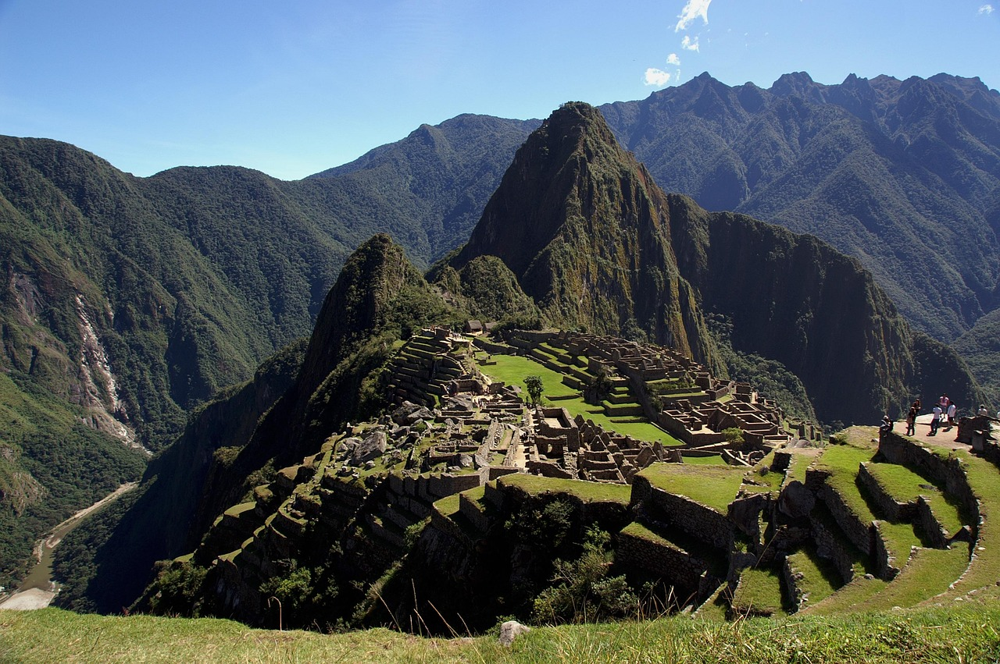

Local popularity rating
Trip planning progress

Local popularity rating
Trip planning progress
This is my first blog post about exploring new places.
I took my first trip to Europe. I started in Ireland, explored Dublin, and then tried all the new foods. I then went to belfast and learned about its history. Lastly I ended up in Italy and explored Florence and Venice.
The mind is as explorasive as your steps will take you- christopher columbus